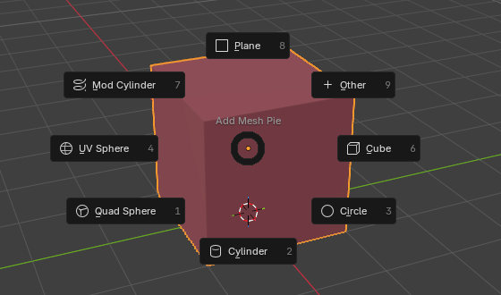
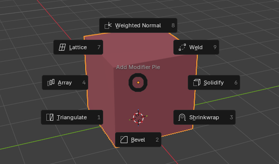
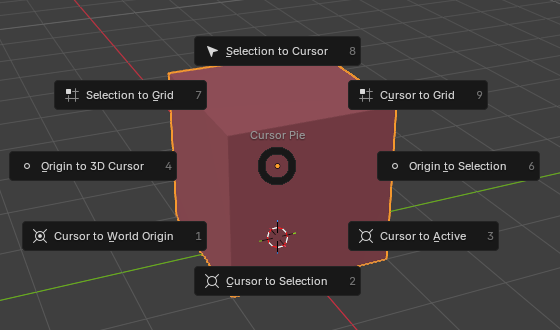
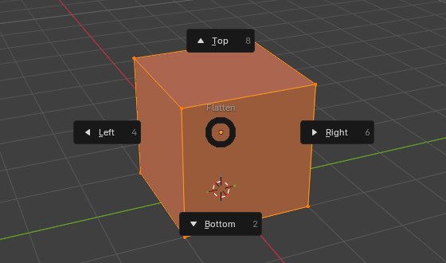
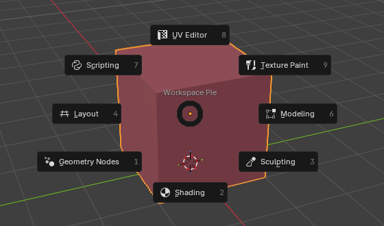
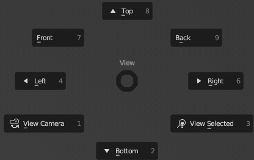

Pie Menus
Tap the key and click, or hold, flick and release.
Add Objects Pie
Shift Alt AAdd primitives scaled to your view, so they are never too big or too small.


Shortcuts
- One click in the settings moves the pie to Shift A and back.
- Relative Scale, Screen Size, Min Size control the size. Size is used when Relative Scale is off.
- Top Right Option: Blender's Add menu, Empty, Monkey or objects from a .blend file.
Toggle in preferences: Add Objects Pie
Add Modifier Pie
Shift QOff by defaultCommon modifiers in one pie. Array, Solidify and Bevel open the interactive Fast tools.

Cursor Pie
Shift SBlender's snap pie, plus origin to cursor or selection.

Shortcuts
Origin to Selection also works in Edit Mode.
Toggle in preferences: Cursor Pie
Flatten Pie
Alt 3Edit ModeFlatten the selection left, right, top or bottom, as seen from the view.

Shortcuts
Lines up on the outermost selected point in that direction.
Toggle in preferences: Flatten Pie
Workspace Pie
Shift \Off by defaultJump between workspaces.

Shortcuts
\ is the § key on Nordic keyboards.
Toggle in preferences: Workspace Pie
View Camera Pie
SpaceRebind tabPuts Blender's View pie on Space. Play Animation moves to Shift Space.

Shortcuts
Set and reset it in the Rebind tab. This changes your Blender keymap.
Utility Pie
UExperimentalMesh and UV helpers: live unwrap, seams by angle, auto merge and more.

UV Pies
Space · QUV EditorExperimentalUnwrap, pack, straighten and island tools in the UV Editor.